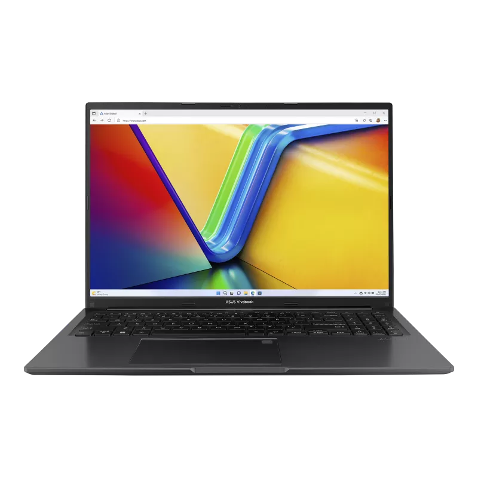
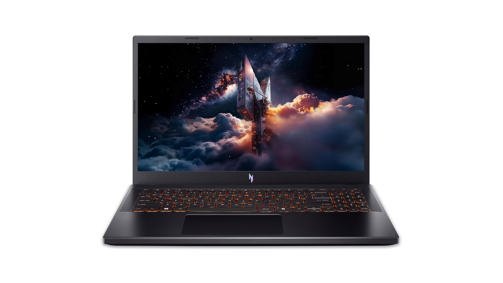

| Component | Lenovo IdeaPad Slim 5 | ASUS Vivobook 16 | Acer Nitro V 15 |
|---|---|---|---|
| Picture | |
 |
 |
| Type | laptop | laptop | laptop |
| Processor | AMD Ryzen AI 5 340 Processor | Intel Core i9-13900H | Core i5 |
| RAM | 16 GB | 16 GB | 16 GB |
| HD Storage | 512GB SSD | 1 TB SSD | 1 TB SSD |
| Screen Size | 16 inch | 16 inch | 15.6 inch |
| Video Card | Integrated AMD Radeon graphic 840M | Integrated AMD Radeon graphics | Dedicated NVIDIA GeForce RTX graphics |
| OS | windows 11 | windows 11 | windows 11 |
| Accessories | Webcam, BLuetooth, Wi-FI, USB | Webcam, BLuetooth, Wi-FI, USB | Webcam, BLuetooth, Wi-FI, USB, ethernet |
| Optical drive | None | None | None |
| Cost | $999.99 | $549.99 | $899.99 |
| Battery life | Average | Average | Average |
| Source | Ideapad link | Vivobook 16 link | Nitro V15 link |
James, the person I interviewed, says his main priorities for his new computer are things like being good for schoolwork, browsing and reading the news, and some basic gaming with the processing capabilities that compliment these needs. Since James is a high school student he doesn't have the money for a really expensive computer so he wants to go as cheap as possible. I would recommend buying the ASUS Vivobook, because it is currently on sale and it's good for everyday things like schoolwork, browsing, decent for basic gaming, and good for general multitasking. I also recommend this option, because James plans to use this in various places as he travels quite often, so this needed to be an option that would be very portable like this option.